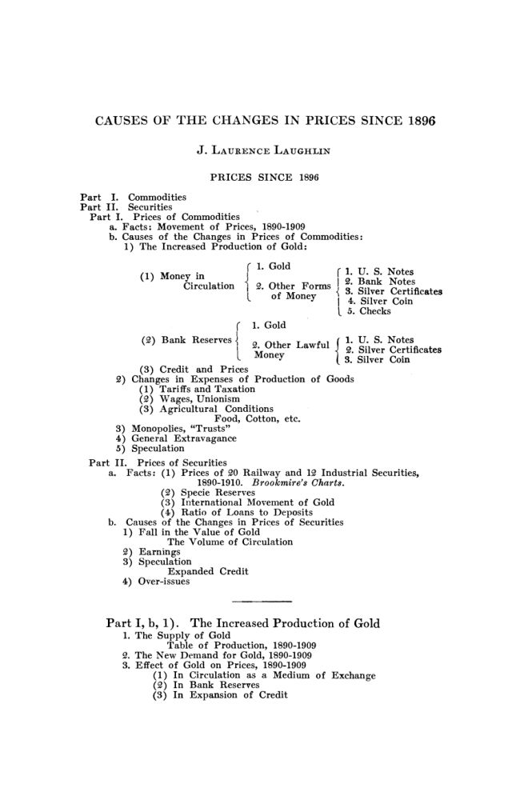

Laughlin × Fisher, 1910: quem empurrou os preços para cima?
Leitura: 8 min
Laughlin atribuiu a alta dos preços desde 1896 a tarifas, alimentos, trustes e extravagância. Fisher respondeu com a equação de trocas: sem o aumento da moeda, os preços de 1909 seriam 45% menores.


Irving Fisher subiu à tribuna de St. Louis com uma vantagem logística. Tinha mandado reimprimir, para distribuir na sala, o capítulo XII de um livro ainda inédito, The Purchasing Power of Money, com autorização da editora Macmillan. A primeira frase de sua comunicação foi para dizer que discordava da maior parte das posições de J. Laurence Laughlin, que falara antes dele.
“Em minha opinião, a velha teoria quantitativa é essencialmente correta.” (“In my opinion the old quantity theory is in essence correct.”)
O problema era concreto. Os preços subiam nos Estados Unidos desde 1896, e E. W. Kemmerer lembraria no debate que os índices disponíveis indicavam alta em todos os países do padrão-ouro desde cerca de 1897. A pergunta da sessão era a causa: o ouro novo das minas ou as condições de produção e venda das mercadorias.
O que dizia Laughlin?
Laughlin apresentou um roteiro em duas partes, preços de mercadorias e preços de títulos, e tratou só da primeira. Expôs a teoria em dez proposições, sem argumentar cada uma. O preço de cada bem se forma no regateio do mercado, a partir do julgamento de compradores e vendedores sobre oferta e demanda. Fixado o preço, o crédito que liquida a operação surge naturalmente. A quantidade de meios de troca seria, assim, resultado, e não causa, da formação de preços.
Laughlin admitia que mais ouro, mantido o resto, tenderia a elevar os preços. Mas o resto não se mantivera. Desde a década de 1870, país após país adotara o padrão-ouro, e a corrida continuava: Rússia, Japão, Peru, Argentina, Brasil e, recentemente, México. Com a expansão do comércio, também os bancos dos países já estabelecidos no ouro pediam mais reservas. Para ele, a nova demanda por ouro acompanhava a nova oferta, como um solo arenoso absorve a chuva forte.
Se o ouro não explicava a alta, restavam as outras coisas. Logo depois do Dingley Act, de 1897, muitos artigos subiram de preço abruptamente. Salários maiores sem ganho de eficiência elevaram custos. O fator mais importante, para Laughlin, foi o preço dos alimentos, resultado das condições da agricultura. Na margem entre custo e preço final operavam ainda os monopólios, que cobram o que o tráfego suporta, a extravagância dos novos ricos, que o varejo repassa a todos, e a especulação.
“Compradores organizados são o único contrapeso a vendedores organizados.” (“Organized buyers are the only offset to organized sellers.”)
Como Fisher fez a conta?
Fisher partiu de um credo oposto. O nível geral de preços não se explica pela oferta e procura de cada bem, assim como o nível da maré não se explica pelos ventos que formam cada onda. Ele é dado pela equação de trocas: a moeda em circulação vezes sua velocidade, mais os depósitos sujeitos a cheque vezes a velocidade deles, igual ao nível de preços vezes o volume de comércio. Na formulação de Fisher, o nível de preços é o único elemento passivo da equação: efeito, e não causa.
A novidade estava nos números. As velocidades de circulação foram calculadas por um método que Fisher publicara no Journal of the Royal Statistical Society em dezembro de 1909. Os depósitos sujeitos a cheque, que até então não tinham estatística própria, vieram da monografia de David Kinley e de dados fornecidos por A. Piatt Andrew, da National Monetary Commission, para quatro anos, com interpolação nos demais. Fisher calculou o nível de preços implícito e o comparou ao índice do Bureau of Labor; para harmonizar as séries, corrigiu os números, em quase todos os casos em menos de 2%.
O resultado, em catorze anos: a moeda em circulação dobrou, os depósitos sujeitos a cheque aproximadamente triplicaram, as velocidades subiram pouco e o volume de comércio também dobrou. Os preços subiram cerca de dois terços. Para medir o peso de cada fator, Fisher perguntou o que teria acontecido se cada um ficasse parado enquanto os outros mudavam.
Daí a conclusão: a principal causa da alta foi o aumento da moeda em circulação, por sua vez devido, sem dúvida, ao aumento da produção de ouro. Como subproduto, Fisher estimou que a parcela dos negócios feita em dinheiro caíra de 14% em 1896 para 9% em 1909, o que confirmaria a impressão dos homens de negócios de que cerca de 90% dos pagamentos eram feitos por cheque.
O que disse o plenário?
D. F. Houston abriu o debate lembrando que a discussão repetia a de quarenta anos antes e citou Cairnes: mostrar que uma alta está ligada ao comércio ou às greves não prova que ela não se deve ao ouro. Com estimativas do Director of the Mint, lembrou que o estoque de ouro dos Estados Unidos passara de US$ 502 milhões em 1895 para US$ 1.612 milhões em 1909.
Kemmerer concordou com Fisher no essencial, mas recusou a separação entre nível geral e preços individuais e chamou o argumento de Laughlin, de que a demanda por ouro igualara a oferta, de petição de princípio: é o próprio nível de preços que iguala as duas. Joseph French Johnson negou a analogia de Laughlin entre dólares e vagões de carga, porque a capacidade de carga de um dólar é elástica. Murray S. Wildman achou que a equação, mesmo verificada, não mostrava qual termo era causa e qual era efeito.
T. N. Carver sugeriu que, em parte, os preços causam a moeda: custos agrícolas maiores exigiriam mais ouro cunhado para o mesmo volume de trocas. F. W. Taussig, de acordo com Fisher no essencial, apontou que os depósitos também dependem, por alguns anos, do volume de comércio, e chamou a posição de Laughlin de insustentável. Ralph H. Hess tratou a equação como identidade matemática e disse concordar com Laughlin quanto ao processo de formação de preços.
Laughlin respondeu que a equação podia ser lida de trás para a frente: entre 1876 e 1896, os depósitos bancários cresceram 500% ou 600%, e os preços caíram. Fisher encerrou dizendo que não queria se esconder atrás de uma equação, mas precisava se abrigar atrás do livro, onde as perguntas estariam respondidas.
A equação seria, para Laughlin, “não uma solução, mas apenas uma enunciação, do problema dos níveis de preços”. (“not a solution, but only a statement, of the problem of price levels”)
Na minha leitura
Na minha leitura, o debate não foi sobre os dados, mas sobre a direção da causalidade. Todos aceitavam a igualdade entre pagamentos e transações; a divergência estava em quais termos se ajustam aos outros. O ajuste estatístico de Fisher confirma a coerência das séries, como ele próprio admitiu ao dizer que a comparação verificava a teoria para quem precisasse e as estatísticas para quem não precisasse. A causalidade vem das hipóteses adicionais, e é sobre elas que Wildman, Taussig e Hess insistiram.
O ponto de Taussig é o que mais rende. Se os depósitos respondem ao volume de negócios durante alguns anos, a moeda bancária é em parte endógena, e a pergunta passa a ser o que limita sua expansão. Para Taussig e Kemmerer, em 1910, era o dinheiro nas reservas dos bancos. Retirada essa âncora, a mesma pergunta continua a separar as escolas de pensamento monetário.
Glossário
- Teoria quantitativa da moeda
- tese de que, mantidas as demais condições, o nível de preços varia em proporção à quantidade de moeda.
- Equação de trocas
- MV + M'V' = PT: moeda (M) e depósitos sujeitos a cheque (M'), cada um multiplicado por sua velocidade (V, V'), igualam o nível de preços (P) vezes o volume de comércio (T).
- Velocidade de circulação
- número de vezes que uma unidade de moeda ou de depósito é usada em pagamentos ao longo de um ano.
- Depósitos sujeitos a cheque
- saldos bancários movimentáveis por cheque; excluem depósitos de poupança e a prazo.
- Número-índice
- média ponderada de preços que mede a variação do nível de preços em relação a um ano-base.
- Padrão-ouro
- regime em que a unidade monetária é definida por um peso de ouro e as notas são conversíveis nele.
- Dingley Act
- lei tarifária americana de 1897, de direitos de importação elevados.
- Petição de princípio
- argumento que pressupõe, nas premissas, aquilo que pretende provar.
Fontes
- Causes of the Changes in Prices Since 1896; Recent Changes in Price Levels and Their Causes; Money and Prices: Discussion — J. Laurence Laughlin e Irving Fisher; debatedores D. F. Houston, E. W. Kemmerer, Joseph French Johnson, Murray S. Wildman, T. N. Carver, F. W. Taussig e Ralph H. Hess (pp. 26–70). JSTOR · Internet Archive (PDF)
- Edição completa, com os demais artigos: Nº 113 do Arquivo.
Documento em domínio público (EUA, publicado antes de 1931), via JSTOR Early Journal Content e Internet Archive. Resumo e comentário do autor deste site, sem afiliação com a American Economic Association. Encontrou um erro? Escreva: a correção é publicada no próprio texto, com data.
↑ Nº 113 · St. Louis, 1910: preços desde 1896, Ricardo aos cem anos e educação Hollander e Bonar, 1910: o que restou de Ricardo em cem anos? →